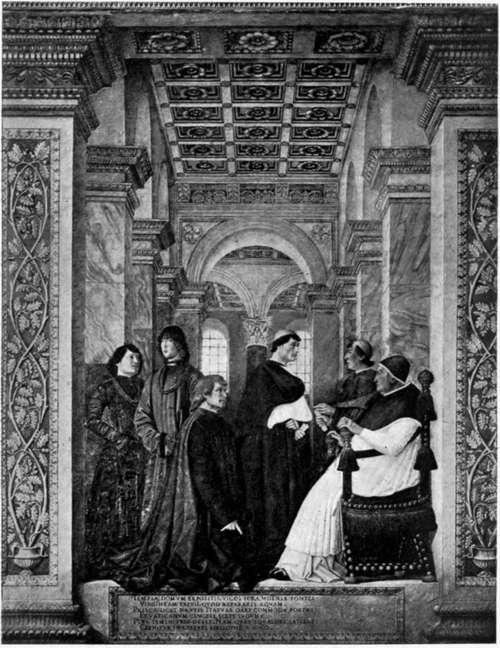

Alexander VI. Part 3
Description
This section is from the book "The Life Of Cesare Borgia", by Rafael Sabatini. Also available from Amazon: The Life of Cesare Borgia.
Alexander VI. Part 3
It is surprising that upon no better authority than this should these precious tears of Ferrante's have been crystallized in history.
If this trivial instance has been dealt with at such length it is because, for one reason, it is typical of the foundation of so many of the Borgia legends, and, for another, because when history has been carefully sifted for evidence of the " universal dismay with which the election of Roderigo Borgia was received " King Ferrante's is the only case of dismay that comes through the mesh at all. Therefore was it expedient to examine it minutely.
That " universal dismay " like the tears of Ferrante rests upon the word of Guicciardini. He says that " men were filled with dread and horror by this election, because it had been effected by such evil ways [con arte si brutte]; and no less because the nature and condition of the person elected were largely known to many."
Guicciardini is to be read with the greatest caution and reserve when he deals with Rome. His bias against, and his enmity of, the Papacy are as obvious as they are notorious, and in his endeavours to bring it as much as possible into discredit he does not even spare his generous patrons, the Medicean Popes Leo X and Clement VII. If he finds it impossible to restrain his invective against these Pontiffs, who heaped favours and honours upon him, what but virulence can be expected of him when he writes of Alexander VI ? He is largely to blame for the flagrant exaggeration of many of the charges brought against the Borgias ; that he hated them we know, and that when he wrote of them he dipped his golden Tuscan pen in vitriol and set down what he desired the world to believe rather than what contemporary documents would have revealed to him, we can prove here and now from that one statement of his which we have quoted.
Who were the men who were filled with dismay, horror, or dread at Roderigo's election ?
The Milanese ? No. For we know that Cardinal Ascanio Sforza, the Duke of Milan's brother, was the most active worker in favour of Roderigo's election, and that this same election was received and celebrated in Milan with public rejoicings.
POPE SIXTUS IV (FRANCESCO DELLA ROVERE) GIVING AUDIENCE TO THE HISTORIAN PLATINA (KNEELING), PRESENTED BY CARDINAL GIULIANO DELLA ROVERE. (From the fresco by Melozzo.)
The Florentines ? No. For the Medici were friendly to the House of Borgia, and we know that they welcomed the election, and that from Florence Manfredi the Ferrarese ambassador wrote home : " It is said he will be a glorious Pontiff " (" Dicesi che sard glorioso Pontefice ").
Were Venice, Genoa, Mantua, Siena, or Lucca dismayed by this election ? Surely not, if the superlatively laudatory congratulations of their various ambassadors are of any account.
Venice confessed that " a better pastor could not have been found for the Church," since he had proved himself " a chief full of experience and an excellent cardinal."
Genoa said that " his merit lay not in having been elected, but in having been desired."
Mantua declared that it "had long awaited the pontificate of one who, during forty years, had rendered himself, by his wisdom and justice, capable of any office."
Siena expressed its joy at seeing the summit of eminence attained by a Pope solely upon his merits " Pervenuto alia digniti pontificale meramente per meriti proprii."
Lucca praised the excellent choice made, and extolled the accomplishments, the wisdom, and experience of the Pontiff.
Not dismay, then, but actual rejoicing must have been almost universal in Italy on the election of Pope Alexander VI. And very properly always considering the Pontificate as the temporal State it was then being accounted ; for Roderigo's influence was vast, his intelligence was renowned, and had again and again been proved, and his administrative talents and capacity for affairs were known to all. He was well born, cultured, of a fine and noble presence, and his wealth was colossal, comprising the archbishoprics of Valencia and Porto, the bishoprics of Majorca, Carthage, Agria, the abbeys of Subiaco, the Monastery of Our Lady of Bellefontaine, the deaconry of Sancta Maria in Via Lata, and his offices of Vice-Chancellor and Dean of Holy Church.
We are told that he gained his election by simony. It is very probable that he did. But the accusation has never been categorically established, and until that happens it would be well to moderate the vituperation hurled at him. Charges of that simony are common ; conclusive proof there is none. We find Giacomo Trotti, the French ambassador in Milan, writing to the Duke of Ferrara a fortnight after Roderigo's election that " the Papacy has been sold . by simony and a thousand rascalities, which is a thing ignominious and detestable."
Ignominious and detestable indeed, if true; but be it remembered that Trotti was the ambassador of France, whose candidate, backed by French influence and French gold, as we have seen, was della Rovere; and, even if his statement was true, the " ignominious and detestable thing " was at least no novelty. Yet Guicciardini, treating of this matter, says : " He gained the Pontificate owing to discord between the Cardinals Ascanio Sforza and Giuliano di San Pietro in Vincoli, and still more because, in a manner without precedent in that age [con esempio nuovo in quella eta] he openly bought the votes of many cardinals, some with money, some with promises of his offices and benefices, which were very great."
Again Guicciardini betrays his bias by attempting to render Roderigo's course, assuming it for the moment to be truly represented, peculiarly odious by this assertion that it was without precedent in that age.
Without precedent! What of the accusations of simony against Innocent VIII, which rest upon a much sounder basis than these against Alexander, and what of those against Sixtus IV ? Further, if a simoniacal election was unprecedented, what of Lorenzo Valla's fierce indictment of simony for which he so narrowly escaped the clutches of the Inquisition some sixty years before this date ?
Continue to: